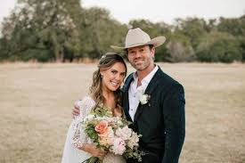

Kendra Scott Gets Engaged
Published : July 26, 2025
Renowned jewelry entrepreneur Kendra Scott is officially engaged. The founder of the billion-dollar Kendra Scott brand said yes to Dr. Thomas Evans during a romantic trip to Lake Como, Italy. The couple shared the news on social media with heartfelt photos from the scenic proposal, instantly drawing congratulations from celebrities and fans alike.
Scott, 51, has been dating Evans, a pediatrician and medical executive, since 2021. Their relationship, while mostly private, had become more public in recent months, with red carpet appearances and joint philanthropic work making headlines. Sources close to the couple describe their bond as “deeply supportive” and “rooted in mutual admiration.”
The engagement ring, designed by Kendra Scott’s own team, features an oval-cut diamond set in a modern yellow gold band—a subtle nod to her signature aesthetic. The designer wrote in her announcement, “I said yes to love, laughter, and forever with you, Thomas.”
This will be Kendra Scott’s second marriage. Her openness about past challenges in love and work has long resonated with her followers, making this new chapter particularly meaningful. Friends say the pair are considering a spring 2026 wedding, possibly in Austin, where her company is headquartered.
The engagement has also drawn attention in business circles, as Kendra continues to expand her brand into home décor and wellness ventures. Her personal milestone adds to a year of major achievements, including new store openings and social impact initiatives.
With the wedding on the horizon, fans and media alike are eager to see how Kendra blends her design legacy with a modern love story. For now, the couple is enjoying their Italian getaway, as the world celebrates a new beginning for one of America’s most admired entrepreneurs.
Read more relationship and lifestyle stories on Political Report.